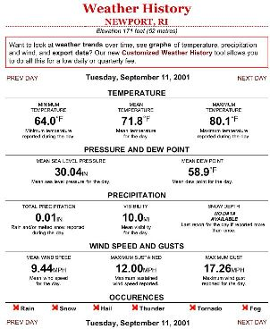
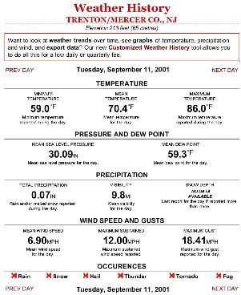

9/11 Weather Anomalies and Field Effects
(page 9)
by
Judy Wood
This page last updated, July 30, 2008
|
click on images for enlargements.
|
This page is currently UNDER CONSTRUCTION.
|
Hurricane Erin, September 11, 2001
|
 |
| Figure 1. (9/11/01) Source:, (9/11/01) Original Image: (more) 010911_1867.jpeg |
 |
| Figure 2. Hurricane Erin, September 1-17, 2001 Source: website: 2001_erin_close_s.jpg |
 |
|
| Figure 3a. Hurricane Erin, September 11, 2001, at about 37.4°N, 65.6°W, which corresponds to abut 10:15AM (EDT). Source: website: |
Figure 3b. Best track of Hurricane Erin, September 1-17, 2001 Source: website: |
| Figure 4a. Hurricane Erin, September 1-17, 2001 website: 2001_erin_close_s.jpg |
Figure 4b. Hurricane Erin, September 1-17, 2001 website: 2001_erin_far_s.jpg |
Hurricane Alex (July 31 - August 7, 2004) Top
|
|
|
| Figure 5a. Hurricane Alex (July 31 - August 7, 2004). Source: website: |
Figure 5b. Best track of Hurricane Alex (July 31 - August 7, 2004) Source: website: |
| Figure 6a. Hurricane Alex (July 31 - August 7, 2004) Source: website: |
Figure 6b. Hurricane Alex (July 31 - August 7, 2004) Source: website: |
Hurricane Florence, (9/3/06 - 9/12/06) Top
| Figure 7a. Hurricane Florence, September 3-12, 2006 Source: website: |
Figure 7b. Hurricane Florence, September 3-12, 2006 Source: website: |
| Figure 8a. Hurricane Florence, September 3-12, 2006 Source: website: 2006_florence_close_s.jpg |
Figure 8b. Hurricane Florence, September 3-12, 2006 Source: website: 2006_florence_far_s.jpg |
Hurricane Felix, (8/8/1995 - 8/25/1995) Top
| Figure 9a. Hurricane Felix, August 8-25, 1995 Source: website: |
Figure 9b. Hurricane Felix, August 8-25, 1995 Source: website: |
| Figure 10a. Hurricane Felix, August 8-25, 1995 Source: website: 1995_felix_close_s.jpg |
Figure 10b. Hurricane Felix, August 8-25, 1995 Source: website: 1995_felix_far_s.jpg |
Hurricane Isaac, (9/27/06 - 10/3/06) Top
| Figure 11a. Hurricane Isaac, September 27- October 2, 2006 Source: website: |
Figure 11b. Hurricane Isaac, September 27- October 2, 2006 Source: website: |
| Figure 12a. Hurricane Isaac, September 27- October 2, 2006 Source: website: 2006_isaac_close_s.jpg |
Figure 12b. Hurricane Isaac, September 27- October 2, 2006 Source: website: 2006_isaac_far_s.jpg |
Hurricane Wilma, (10/15/05 - 10/3/05) Top
| Figure 13a. Hurricane Wilma, October 15-25, 2005 Source: website: |
Figure 13b. Hurricane Wilma, October 15-25, 2005 Source: website: |
| Figure 14a. Hurricane Wilma, October 15-25, 2005 Source: website: |
Figure 14b. Hurricane Wilma, October 15-25, 2005 Source: website: |
Hurricane Alex (July 31 - August 7, 2004) Top
| Figure 15. Alex, Frequency of data sampling anomalous moisture Source: website: higher-resolution |
|||||||
| Figure 16. Alex, Humidity, Dew Point, Temperature Source: website: higher-resolution |
|||||||
| Figure 17. Alex, Humidity, Dew Point, Pressure Source: website: higher-resolution |
|||||||
| Figure 18. Alex, Wind Speed Wind Direction (direction legned) Source: website: higher-resolution |
|||||||
| Figure 19. Alex, Temperature Humidity Pressure Dew Point Visibility Wind Speed Wind Direction Source: website: higher-resolution |
|||||||
These sign convensions for wind direction provide numerical values that are shown in the graphs. If the wind is fluctuation between East and ENE, there will be a jump in the graph of the E-wind orientation (b). In this case, the W-wind orientation (c) would show a smooth transition in direction. Source: Wood |
|||||||
Hurricane Erin (9/1/01 - 9/17/01) Top
| Figure 21. Erin, Frequency of data sampling anomalous moisture Source: website: higher-resolution |
|||||||
| Figure 22. Erin, Humidity, Dew Point, Temperature Source: website: higher-resolution |
|||||||
| Figure 23. Erin, Humidity, Dew Point, Pressure Source: website: higher-resolution |
|||||||
| Figure 24. Erin, Wind Speed Wind Direction (direction legned) Source: website: higher-resolution |
|||||||
| Figure 25. Erin, Temperature Humidity Pressure Dew Point Visibility Wind Speed Wind Direction Source: website: higher-resolution |
|||||||
These sign convensions for wind direction provide numerical values that are shown in the graphs. If the wind is fluctuation between East and ENE, there will be a jump in the graph of the E-wind orientation (b). In this case, the W-wind orientation (c) would show a smooth transition in direction. Source: Wood |
|||||||
 |
 |
||||||||
| Figure 27. M Source: website: |
Figure 28. M Source: website: |
Figure 29. M Source: website: |
Figure 30. M Source: website: |
Figure 31. M Source: website: |
|||||
|
|
|
|
|
 |
||||||||||
| Figure 32. LaGuardia, NY Source: website: |
Figure 33. Farmingdale, NJ Source: website: |
Figure 34. Republic, NY Source: website: |
Figure 35. New Haven, CT Source: website: |
Figure 36. New London, CT Source: website: |
||||||
|
|
|
|
|
 |
||||||||||||
| Figure 37. Newark, NJ Source: website: |
Figure 38.JFK, NY Source: website: |
Figure 39. Islip, Long Island Source: website: |
Figure 40. Bridgeport, CT Source: website: |
Figure 41. Central Park, NY Source: website: |
||||||||
|
|
|
|
. |
| Figure 42. M Source: website: 2001_erin_close_s.jpg |
Figure 43. M Source: website: 2001_erin_far_s.jpg |
| Figure 44. M Source: website: |
Figure 45. M Source: website: |
Figure 46. M Source: website: |
| Figure 47. M Source: website: |
| Reference 48. (11/6/03) Source:, http://www.spaceref.com/news/viewsr.html?pid=10926 |
|
|
| Reference 49. |
Magnetic Reconnection Top
 |
||
| Figure 50. Magnetic reconnection Illustration only.by Staff Writers. Source: website: |
Figure 51. Magnetic reconnection Source: |
Figure 52. See Anomalies at the WTC and the Hutchison Effect Source: |
{kind=link}
|
|
t launch into clear, blue skies at 6:01 p.m. EST Saturday, Feb. 17, the five THEMIS probes are healthy and in their expected orbits, according to University of California, Berkeley, physicist and mission principal investigator Vassilis Angelopoulos. "Based on telemetry received by UC Berkeley's ground station, they look really good," he said. |
| Reference 53. (2/20/07) Source: website: |
| Reference 54: source: |
|
ENFORCEMENT AND TOXICITY |
|
|
| Reference 4. (9/11/01) Source:, |
|
click on images for enlargements.
|
Pentagon Top
(This will likely be moved elsewhere.)
September 14, 2001
|
| Figure 50. 0 (9/14/01) Source: webpage: 010914-F-8006R-002_ccc.jpg, 010914-F-8006R-002_ccc_s.jpg DoD photo by Tech. Sgt. Cedric H. Rudisill. (Released) |
XXXXX Top
|
XXXXX
Source:
|
| A |
XXXXX Top
|
497 x 595 426 x 510 |
Reference Sites Top
| Reference Sites |
|
Erin 2001 wind analyses
http://www.aoml.noaa.gov/hrd/Storm_pages/erin2001/wind.html, (archived) Background on the HRD Surface Wind Analysis System http://www.aoml.noaa.gov/hrd/Storm_pages/surf_background.html, (archived) Hurricane Erin 2001 http://www.aoml.noaa.gov/hrd/Storm_pages/erin2001/, (archived) NASA Makes A Heated 3-D Look Into Hurricane Erin's Eye http://www.sciencedaily.com/releases/2005/10/051007090048.htm, (archived) Images and Data from Terra http://terra.nasa.gov/Gallery/ Images http://modis-atmos.gsfc.nasa.gov/IMAGES/index.html (archived) |
|
Shortcut links
|
|
Jump to A Controlled Environment? Hurricane Erin, (9/1/01 - 9/17/01) Jump to Hurricane Alex (July 31 - August 7, 2004) Jump to Hurricane Florence, (9/3/06 - 9/12/06) |
|
Continue to next page.
|
| Top | homepage |
|
|
|
|
|
Why Indeed |
|
|
|